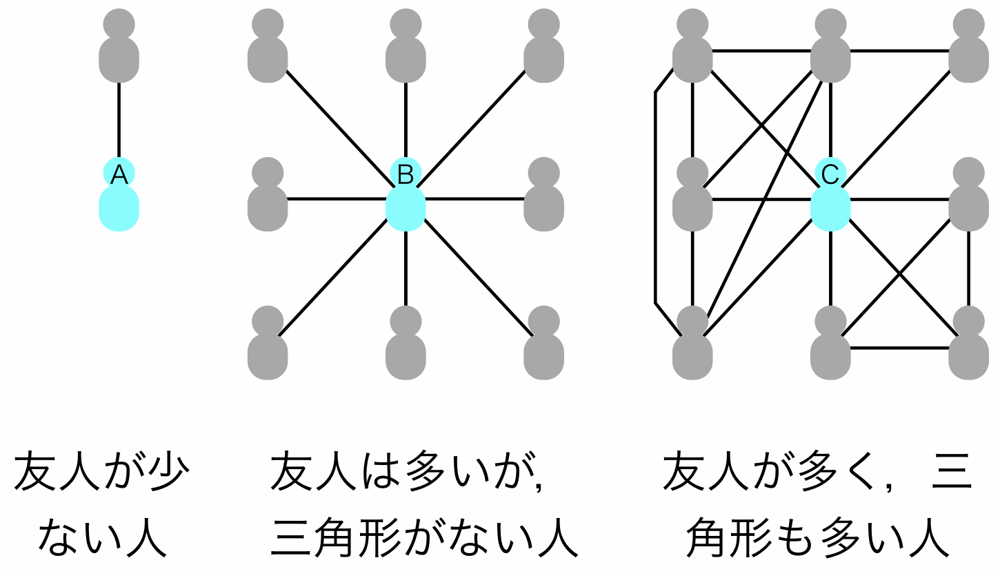

キーワード：ネットワーク，自殺，無縁社会，SNS，クラスター係数
[Masuda, Kurahashi, Onari. PLOS ONE (2013)]
日本の自殺者は，1998年以来年間3万人を超えている．人口で割った比率としては先進国中で最大であり，世界全体でも上位にある．自殺の要因は複合的であり，友人の数や質，地域社会への埋め込まれ具合といったソーシャル・ネットワークの要因も示唆されている．実際，ドイツのデュルケームが19世紀に研究を行って以来，自殺研究は社会学の中心的課題の一つである．
自殺者の減少につながる示唆をネットワーク科学の見地から得られないかと考え，本研究では，株式会社ミクシィからデータ提供を受け，ソーシャル・ネットワークと自殺の関係を調べた．ミクシィ社員が個人情報を削除したデータを，我々が，ミクシィ社内でインターネット非接続の計算機を用いて解析した．ユーザが作成できる豊富な種類のコミュニティが存在することは，mixi の際立った特徴の1つである．本研究では，ユーザが自殺に関係するコミュニティ（自殺コミュ）に属するか否かを，そのユーザの自殺傾向の指標として用いた．
解析の結果，以下のことがわかった．
(1) 属するコミュニティが多い人ほど，自殺コミュに属しやすい．
(2) 三角形をあまりもたない人ほど，自殺コミュに属しやすい．
(3) 直接の友人が自殺コミュに属していやすい人ほど，自殺コミュに属しやすい．
(4) 友人数，性別，年齢は，自殺コミュの属しやすさとほとんど関係しない．
(2) は説明を要する．下の図の A と B を比べると友人数が異なる．友人数が少ない A が B よりも高い自殺傾向を導くことはかねてから指摘されてきた（ただし，今回の調査では友人数と自殺コミュの属しやすさとの関係は認められなかった）．昨今の無縁社会とも通じる．
B と C は同じ友人数をもつ．B は三角形をもたない．友人は少なくないが，相手と一対一の関係だけであり，団体に所属している感じがしない．一方，C は三角形を多くもつ．C の人は，3人組，4人組などのグループにいくつか属している．家族，仕事仲間，遊び仲間などに対応すると思ってよい．2人でなく3人以上でこそグループと言える．このとき，C は B よりも自殺傾向が小さい．三角形には自殺を止める力があるようだ．
(1), (2), (3) はこの順番に効果が大きく，特に (1) の効果はとても大きい．自殺コミュに属する人はそうでない人よりも，平均6倍以上多い数のコミュニティに属する．今回の研究では，性別や年齢よりも(1)～(3) のようなソーシャル・ネットワーク（三角形など）や SNSでの振る舞い（所属コミュ数が多いことなど）が自殺をひもとく鍵になりうることがわかった．さらに，鬱についての解析結果も，自殺の結果と同じ傾向となった．
|  |